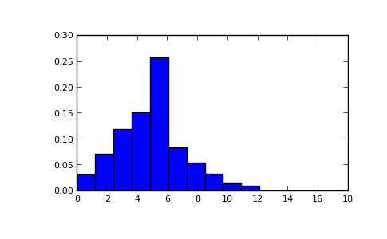

numpy.random.poisson¶
- numpy.random.poisson(lam=1.0, size=None)¶
Draw samples from a Poisson distribution.
The Poisson distribution is the limit of the Binomial distribution for large N.
Parameters : lam : float
Expectation of interval, should be >= 0.
size : int or tuple of ints, optional
Output shape. If the given shape is, e.g., (m, n, k), then m * n * k samples are drawn.
Notes
The Poisson distribution
System Message: WARNING/2 (f(k; \lambda)=\frac{\lambda^k e^{-\lambda}}{k!} )
latex exited with error: [stderr] [stdout] This is pdfTeX, Version 3.1415926-2.5-1.40.14 (TeX Live 2013) restricted \write18 enabled. entering extended mode (./math.tex LaTeX2e <2011/06/27> Babel <v3.8m> and hyphenation patterns for english, dumylang, nohyphenation, lo aded. (/usr/share/texlive/texmf-dist/tex/latex/base/article.cls Document Class: article 2007/10/19 v1.4h Standard LaTeX document class (/usr/share/texlive/texmf-dist/tex/latex/base/size12.clo)) (/usr/share/texlive/texmf-dist/tex/latex/base/inputenc.sty (/usr/share/texlive/texmf-dist/tex/latex/ucs/utf8x.def)) (/usr/share/texlive/texmf-dist/tex/latex/ucs/ucs.sty (/usr/share/texlive/texmf-dist/tex/latex/ucs/data/uni-global.def)) (/usr/share/texlive/texmf-dist/tex/latex/amsmath/amsmath.sty For additional information on amsmath, use the `?’ option. (/usr/share/texlive/texmf-dist/tex/latex/amsmath/amstext.sty (/usr/share/texlive/texmf-dist/tex/latex/amsmath/amsgen.sty)) (/usr/share/texlive/texmf-dist/tex/latex/amsmath/amsbsy.sty) (/usr/share/texlive/texmf-dist/tex/latex/amsmath/amsopn.sty)) (/usr/share/texlive/texmf-dist/tex/latex/amscls/amsthm.sty) (/usr/share/texlive/texmf-dist/tex/latex/amsfonts/amssymb.sty (/usr/share/texlive/texmf-dist/tex/latex/amsfonts/amsfonts.sty)) (/usr/share/texlive/texmf-dist/tex/latex/tools/bm.sty) ! LaTeX Error: File `preview.sty’ not found. Type X to quit or <RETURN> to proceed, or enter new name. (Default extension: sty) Enter file name: ! Emergency stop. <read *> l.12 \begin {document}^^M No pages of output. Transcript written on math.log.For events with an expected separation
the Poisson distributionSystem Message: WARNING/2 (\lambda)
latex exited with error: [stderr] [stdout] This is pdfTeX, Version 3.1415926-2.5-1.40.14 (TeX Live 2013) restricted \write18 enabled. entering extended mode (./math.tex LaTeX2e <2011/06/27> Babel <v3.8m> and hyphenation patterns for english, dumylang, nohyphenation, lo aded. (/usr/share/texlive/texmf-dist/tex/latex/base/article.cls Document Class: article 2007/10/19 v1.4h Standard LaTeX document class (/usr/share/texlive/texmf-dist/tex/latex/base/size12.clo)) (/usr/share/texlive/texmf-dist/tex/latex/base/inputenc.sty (/usr/share/texlive/texmf-dist/tex/latex/ucs/utf8x.def)) (/usr/share/texlive/texmf-dist/tex/latex/ucs/ucs.sty (/usr/share/texlive/texmf-dist/tex/latex/ucs/data/uni-global.def)) (/usr/share/texlive/texmf-dist/tex/latex/amsmath/amsmath.sty For additional information on amsmath, use the `?’ option. (/usr/share/texlive/texmf-dist/tex/latex/amsmath/amstext.sty (/usr/share/texlive/texmf-dist/tex/latex/amsmath/amsgen.sty)) (/usr/share/texlive/texmf-dist/tex/latex/amsmath/amsbsy.sty) (/usr/share/texlive/texmf-dist/tex/latex/amsmath/amsopn.sty)) (/usr/share/texlive/texmf-dist/tex/latex/amscls/amsthm.sty) (/usr/share/texlive/texmf-dist/tex/latex/amsfonts/amssymb.sty (/usr/share/texlive/texmf-dist/tex/latex/amsfonts/amsfonts.sty)) (/usr/share/texlive/texmf-dist/tex/latex/tools/bm.sty) ! LaTeX Error: File `preview.sty’ not found. Type X to quit or <RETURN> to proceed, or enter new name. (Default extension: sty) Enter file name: ! Emergency stop. <read *> l.12 \begin {document}^^M No pages of output. Transcript written on math.log.describes the probability ofSystem Message: WARNING/2 (f(k; \lambda))
latex exited with error: [stderr] [stdout] This is pdfTeX, Version 3.1415926-2.5-1.40.14 (TeX Live 2013) restricted \write18 enabled. entering extended mode (./math.tex LaTeX2e <2011/06/27> Babel <v3.8m> and hyphenation patterns for english, dumylang, nohyphenation, lo aded. (/usr/share/texlive/texmf-dist/tex/latex/base/article.cls Document Class: article 2007/10/19 v1.4h Standard LaTeX document class (/usr/share/texlive/texmf-dist/tex/latex/base/size12.clo)) (/usr/share/texlive/texmf-dist/tex/latex/base/inputenc.sty (/usr/share/texlive/texmf-dist/tex/latex/ucs/utf8x.def)) (/usr/share/texlive/texmf-dist/tex/latex/ucs/ucs.sty (/usr/share/texlive/texmf-dist/tex/latex/ucs/data/uni-global.def)) (/usr/share/texlive/texmf-dist/tex/latex/amsmath/amsmath.sty For additional information on amsmath, use the `?’ option. (/usr/share/texlive/texmf-dist/tex/latex/amsmath/amstext.sty (/usr/share/texlive/texmf-dist/tex/latex/amsmath/amsgen.sty)) (/usr/share/texlive/texmf-dist/tex/latex/amsmath/amsbsy.sty) (/usr/share/texlive/texmf-dist/tex/latex/amsmath/amsopn.sty)) (/usr/share/texlive/texmf-dist/tex/latex/amscls/amsthm.sty) (/usr/share/texlive/texmf-dist/tex/latex/amsfonts/amssymb.sty (/usr/share/texlive/texmf-dist/tex/latex/amsfonts/amsfonts.sty)) (/usr/share/texlive/texmf-dist/tex/latex/tools/bm.sty) ! LaTeX Error: File `preview.sty’ not found. Type X to quit or <RETURN> to proceed, or enter new name. (Default extension: sty) Enter file name: ! Emergency stop. <read *> l.12 \begin {document}^^M No pages of output. Transcript written on math.log.events occurring within the observed intervalSystem Message: WARNING/2 (k)
latex exited with error: [stderr] [stdout] This is pdfTeX, Version 3.1415926-2.5-1.40.14 (TeX Live 2013) restricted \write18 enabled. entering extended mode (./math.tex LaTeX2e <2011/06/27> Babel <v3.8m> and hyphenation patterns for english, dumylang, nohyphenation, lo aded. (/usr/share/texlive/texmf-dist/tex/latex/base/article.cls Document Class: article 2007/10/19 v1.4h Standard LaTeX document class (/usr/share/texlive/texmf-dist/tex/latex/base/size12.clo)) (/usr/share/texlive/texmf-dist/tex/latex/base/inputenc.sty (/usr/share/texlive/texmf-dist/tex/latex/ucs/utf8x.def)) (/usr/share/texlive/texmf-dist/tex/latex/ucs/ucs.sty (/usr/share/texlive/texmf-dist/tex/latex/ucs/data/uni-global.def)) (/usr/share/texlive/texmf-dist/tex/latex/amsmath/amsmath.sty For additional information on amsmath, use the `?’ option. (/usr/share/texlive/texmf-dist/tex/latex/amsmath/amstext.sty (/usr/share/texlive/texmf-dist/tex/latex/amsmath/amsgen.sty)) (/usr/share/texlive/texmf-dist/tex/latex/amsmath/amsbsy.sty) (/usr/share/texlive/texmf-dist/tex/latex/amsmath/amsopn.sty)) (/usr/share/texlive/texmf-dist/tex/latex/amscls/amsthm.sty) (/usr/share/texlive/texmf-dist/tex/latex/amsfonts/amssymb.sty (/usr/share/texlive/texmf-dist/tex/latex/amsfonts/amsfonts.sty)) (/usr/share/texlive/texmf-dist/tex/latex/tools/bm.sty) ! LaTeX Error: File `preview.sty’ not found. Type X to quit or <RETURN> to proceed, or enter new name. (Default extension: sty) Enter file name: ! Emergency stop. <read *> l.12 \begin {document}^^M No pages of output. Transcript written on math.log..System Message: WARNING/2 (\lambda)
latex exited with error: [stderr] [stdout] This is pdfTeX, Version 3.1415926-2.5-1.40.14 (TeX Live 2013) restricted \write18 enabled. entering extended mode (./math.tex LaTeX2e <2011/06/27> Babel <v3.8m> and hyphenation patterns for english, dumylang, nohyphenation, lo aded. (/usr/share/texlive/texmf-dist/tex/latex/base/article.cls Document Class: article 2007/10/19 v1.4h Standard LaTeX document class (/usr/share/texlive/texmf-dist/tex/latex/base/size12.clo)) (/usr/share/texlive/texmf-dist/tex/latex/base/inputenc.sty (/usr/share/texlive/texmf-dist/tex/latex/ucs/utf8x.def)) (/usr/share/texlive/texmf-dist/tex/latex/ucs/ucs.sty (/usr/share/texlive/texmf-dist/tex/latex/ucs/data/uni-global.def)) (/usr/share/texlive/texmf-dist/tex/latex/amsmath/amsmath.sty For additional information on amsmath, use the `?’ option. (/usr/share/texlive/texmf-dist/tex/latex/amsmath/amstext.sty (/usr/share/texlive/texmf-dist/tex/latex/amsmath/amsgen.sty)) (/usr/share/texlive/texmf-dist/tex/latex/amsmath/amsbsy.sty) (/usr/share/texlive/texmf-dist/tex/latex/amsmath/amsopn.sty)) (/usr/share/texlive/texmf-dist/tex/latex/amscls/amsthm.sty) (/usr/share/texlive/texmf-dist/tex/latex/amsfonts/amssymb.sty (/usr/share/texlive/texmf-dist/tex/latex/amsfonts/amsfonts.sty)) (/usr/share/texlive/texmf-dist/tex/latex/tools/bm.sty) ! LaTeX Error: File `preview.sty’ not found. Type X to quit or <RETURN> to proceed, or enter new name. (Default extension: sty) Enter file name: ! Emergency stop. <read *> l.12 \begin {document}^^M No pages of output. Transcript written on math.log.Because the output is limited to the range of the C long type, a ValueError is raised when lam is within 10 sigma of the maximum representable value.
References
[R222] Weisstein, Eric W. “Poisson Distribution.” From MathWorld–A Wolfram Web Resource. http://mathworld.wolfram.com/PoissonDistribution.html [R223] Wikipedia, “Poisson distribution”, http://en.wikipedia.org/wiki/Poisson_distribution Examples
Draw samples from the distribution:
>>> import numpy as np >>> s = np.random.poisson(5, 10000)
Display histogram of the sample:
>>> import matplotlib.pyplot as plt >>> count, bins, ignored = plt.hist(s, 14, normed=True) >>> plt.show()
(Source code, png, pdf)

{kind=link}